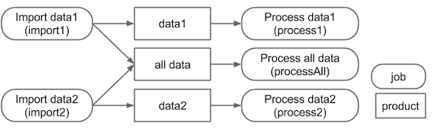

Architecture¶

How jobs are executed with the patriot-workflow-scheduler is described in the above figure. The jobs are defined with Patriot Batch Config (PBC) files in original DSL. PBC files are parsed by the patriot script and registered to JobStore. The JobStore has a role of determining which jobs are executable by managing dependency. The executable jobs are fetched by workers and executed by the workers.
Model of jobs and dependency¶
The job dependency model is shown in the above figure. The model is designed on the basis of data flow. The rounded rectangles and the rectangles represent jobs and products, respectively. The products can be produced and/or required by one or more jobs. The figure has two kind of data (data1, data2) which are modeled as products. The product data1 and date2 are produced (required) by the job import1 (process1) and import2 (process2), respectively. In addition, the figure has a virtual product (‘all data’) which is produced by the import1 and the import2 and required by the processAll. A job is judged as executable when all products the job requires are available. A product becomes available when all jobs which produce the product are successfully finished.
For instance, the process1 becomes executable when the import1 is finished because the process1 only requires the data1 and it is produced only by the import1. On the other hand, both the import1 and the import2 have to be finished for the processAll. The processAll only requires the ‘data all’ but it has two producers (import1 and import2).
The data flow based dependency model can improve modularity of dependency configuration. Consider a situation that new data (data3) which should be processed as all data is added which should be processed as all data for instance. The below figure shows this kind of extension can be achieved by only producer-side modification due to the existence of the virtual product (‘all data’). By setting the ‘all data’ as a product of the import3, the processAll requires completion of the import3 to become executable. The patriot workflow scheduler provides an original Patriot Batch Config DSL (PBC) to describe the data-flow based dependency model.